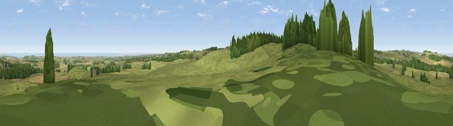

Viewpoint near Warenford
#3441 in England · top 19% of its area beats it · near WarenfordWhere it is
The exact computed spot (NU 12625 27150). Click the marker for map links.
The view, rendered

A 360° render of this exact spot computed from the terrain model, tree cover and land cover — summer colours, afternoon light, calibrated against photographs of famous viewpoints. Real trees, hedges and buildings will differ in detail.
The panorama
Grey silhouette: terrain skyline in each direction (720 bearings, Earth curvature and refraction included). Dashed green: skyline with trees (+15 m) and buildings (+8 m) as obstacles. Blue strip: how far the ground is visible on each bearing.
Where the view opens
Wedge length = distance to the farthest visible ground on that bearing (vegetation-aware). Rings at 10, 25 and 50 km.
What fills the view
55% grassland · 27% cropland · 10% woodland · 7% water ·
Angular shares of the visible panorama (visual magnitude), not map area. Landscape diversity 0.49 (0–1 Shannon).
Key numbers
More beautiful places nearby
The staircase of upgrades: each row has a higher view potential than everything closer. Driving times are estimates from straight-line distance, calibrated against real road routing — check an actual route before setting out.
| Place | Direction | Drive | Score |
|---|---|---|---|
| Viewpoint near Warenford | NNW · 4 km | ~9 min | 77.3 |
| Viewpoint near Chillingham | WSW · 5 km | ~11 min | 88.1 |
| Viewpoint near Easington | SSE · 123 km | ~148 min | 90.2 |
| The Knoll | S · 542 km | ~489 min | 91.0 |
55.53791, -1.80152 · source: screening · position refined by local search. Computed location — check access rights before visiting.